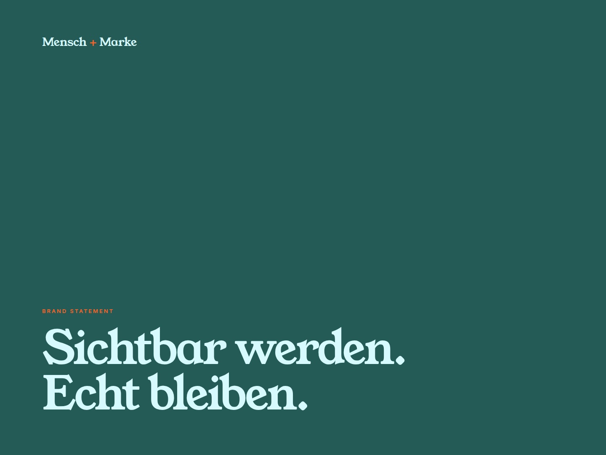

Kerngeschichte
Personal Branding für kreative Selbstständige, Gründer:innen und KMUs
Sie machen gute Arbeit, haben aber selten Zeit, Routine oder Designer für Social Media. Ohne System sieht jeder Post anders aus, und die Marke bleibt unsichtbar. Ziel: so sichtbar werden, dass Aufträge entstehen statt nur Likes.
Claude Skilldssd-brand-interview.mdStrukturiertes Marken-Interview mit 15 Fragen. Liefert das Rohmaterial für:{{ biText }}

Aus einem KI-gestützten Brand Interview als Claude Skill und dem Brand Thinking Canvas verdichtet: Mission, Vision, Werte und ein Brand Statement, das Tonalität und Botschaften aller Medien steuert.